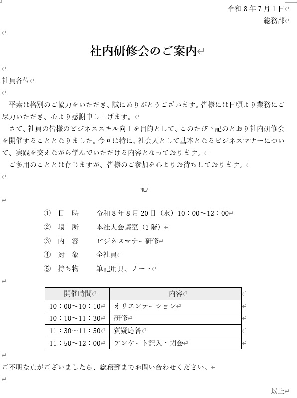
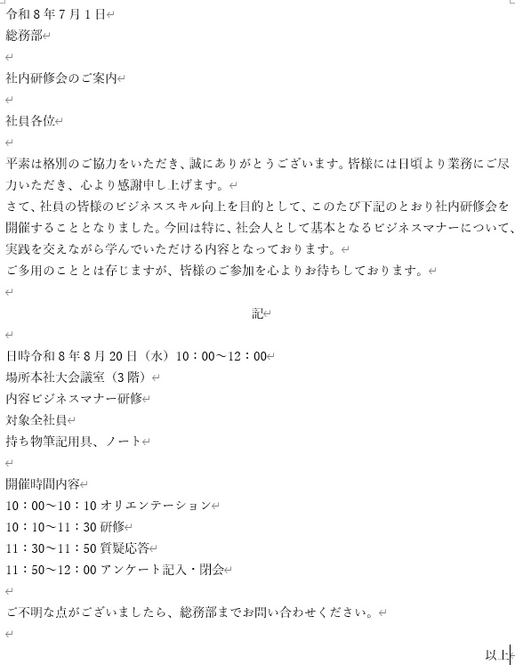
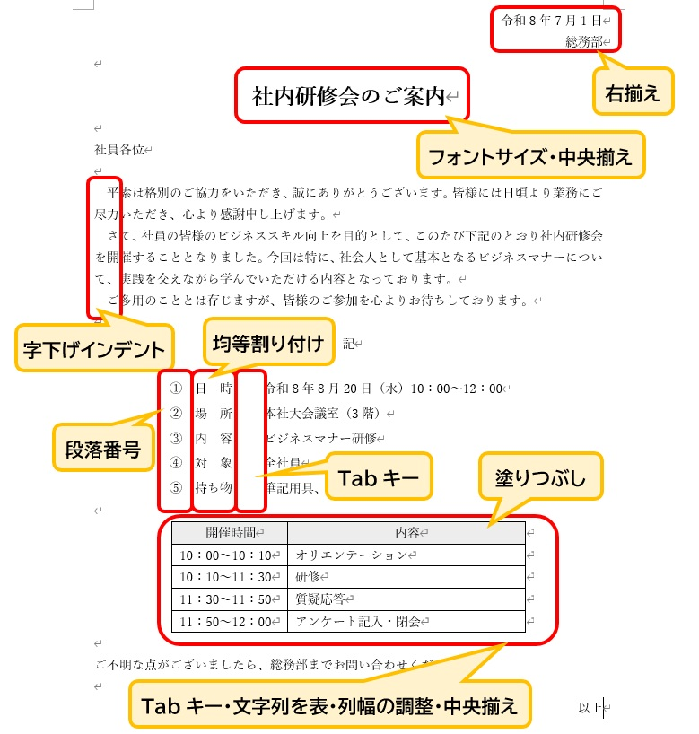

Wordで作る「社内文書」の整え方
仕事でWordを使う際、報告書や連絡書、マニュアル作成など「組織内での共有」を目的とした書類を作る機会が多くあります。こうした社内文書で最も大切なのは、凝ったデザインではなく**「誰が読んでも情報の見落としがないこと」**です。
今回は一つの例題を通して、文字だけの状態からどのように情報を整理していけば、実務で役立つ分かりやすい書類になるのか、その共通ルールを確認しましょう。
・ビジネス文書としての適切な「配置」の考え方
・優先順位を明確にする「強調」のしかた
・図や表を用いた情報の「整理」のしかた
1. 完成図：目指すべき書類の形
まずは、今回作成する書類の完成した姿を見てみましょう。日付、宛先、タイトル、そして詳細な情報。これらが適切な場所に配置されることで、読み手は内容をスムーズに把握できるようになります。

▲ このような、スッキリと読みやすい書類を目標にします
2. 文字入力：まずは「内容」をすべて用意する
Wordで作成を始める際、あらかじめページのレイアウト（余白・行数・文字数・用紙サイズなど）を作る文書に合わせて変更しておくと、その後の編集作業がスムーズになります。
レイアウトが整ったら、形を整える前に**「中身の文章」をすべて入力してしまいましょう。**タイピングに集中して、まずは左詰めのまま必要な情報を打ち込みます。太字や中央揃えなどの操作は、最後に行うのが最も効率的です。
総務部
社内研修会のご案内
社員各位
平素は格別の協力をいただき、誠にありがとうございます。皆様には日頃より業務にご尽力いただき、心より感謝申し上げます。
さて、社員の皆様のビジネススキル向上を目的として、このたび下記の通り社内研修会を開催することとなりました。今回は特に、社会人として基本となるビジネスマナーについて、実践を交えながら学んでいただける内容となっております。
ご多用のこととは存じますが、皆様のご参加を心よりお待ちしております。
記
日時 令和8年8月20日（水） 10:00～12:00
場所 本社大会議室（3階）
内容 ビジネスマナー研修
対象 全社員
持ち物 筆記用具、ノート
開催時間 内容
10:00～10:10 オリエンテーション
10:10～11:30 研修
11:30～11:50 質疑応答
11:50～12:00 アンケート記入・閉会
ご不明な点がございましたら、総務部までお問い合わせください。
以上
途中で「記」という文字を入力して Enter キーを押すと、自動的に「記」が中央へ移動し、次の行に「以上」という文字が右端に出現することがあります。これは**「入力オートフォーマット」**というWordの便利な機能です。 もし自動で出た場合は、そのまま利用してOKです。出なかった場合も、最後にご自身で入力して整えれば全く問題ありません。

▲ 文章を打ち終えた「素材」の状態です。ここから整えていきます。
3. 解説：見やすさを生む「理由」を知る
打ち込んだ文字をどう動かせば、分かりやすい書類になるのでしょうか。現役講師が改善のアドバイスを送るイメージで、操作の「理由」を確認していきましょう。

▲ どの操作にも「読み手のため」という理由があります
情報の役割ごとに場所を決める（配置のルール）
日付や発信元を右に寄せ、タイトルを中央に配置します。
【理由】
日付などは「いつ・誰が」という記録用の情報なので、右上にまとめておくことで本文の邪魔をしません。逆にタイトルは「書類の主題」なので、中央に大きく置くことで、読み手が何の書類かを一瞬で判断できるようになります。
重要な情報に優先順位をつける（強調のしかた）
タイトルを大きくし、太字に変更します。
【理由】
すべて同じ大きさの文字が並んでいると、どこが重要なのかが分かりにくくなります。メリハリをつけることで、読み手の注意を最も大切な場所へ引きつけることができます。
縦のラインを揃えて視線を安定させる（整列のしかた）
詳細項目の幅を揃え、続く内容の開始位置を縦に一直線に並べます。
【理由】
文字の開始位置が揃っていると、脳は情報を整理しやすくなります。均等割り付けやTabキーを使い、見えない「縦のライン」を通すことで、清潔感のある読みやすい紙面になります。
複雑な情報を構造化する（表の活用）
時間割などの細かいデータは、枠線（表）で囲み、項目に色をつけます。
【理由】
今回は、あらかじめ打ち込んでおいた文字を後から表に変換する機能を使っています。もちろん、最初から表を挿入して直接入力する方法もあり、状況に合わせて作りやすい方を選んで大丈夫です。
表形式にすることで情報の対応関係が明確になり、見出しに薄い色を塗ることで区切りが視覚的にハッキリし、読み間違いを防げます。
Wordの操作は「ボタンを覚えること」がゴールではありません。「どうすれば相手が楽に読めるか」を考えることが、本当のスキルアップに繋がります。社内の議事録や報告書など、あらゆる書類に今回の考え方を活用してみてください。
まとめ
Wordを使えば、同じ文章でも全く違う印象の書類に仕上げることができます。まずは以下の基本を意識してみてください。
- 事前のレイアウト設定：作成前に用紙サイズや余白を決めておく。
- 配置のルール：日付は右、タイトルは中央。情報の役割に合わせる。
- 適切な強調：文字の大きさに差をつけ、優先順位を示す。
- 縦の整列：項目の幅を揃え、視線の動きを安定させる。
- 情報の整理：複雑な内容は表を活用して分かりやすくする。
今回は研修の案内を一例にしましたが、この方法は報告書やマニュアルなど、あらゆる社内文書に応用できます。まずは見本を見ながら、一歩ずつ自分の手で形にしてみてください。その積み重ねが、実務での自信と信頼に繋がります。